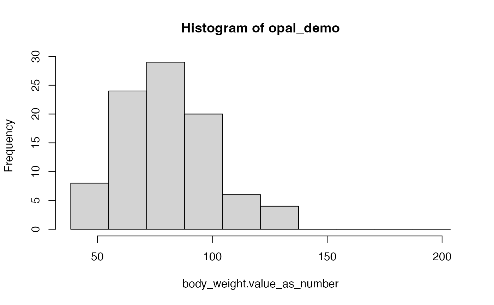

General demonstration
demo.RmdThis demonstration showcases the use of the dsOMOPHelper
package, which provides a simplified approach for extracting data from
OMOP CDM databases and integrating it with the DataSHIELD workflow
through the dsOMOPClient package. dsOMOPHelper
allows for the extraction and use of data from an OMOP CDM database as
needed, based on the variables chosen by the user, formatting the data
to make the information more accessible to researchers from the
DataSHIELD environment. To assist in selecting data from the database,
the package also includes methods for exploring the data that is
available in the database.
It is important to note that dsOMOPHelper aims to show
the enhanced capabilities of tools built on top of
dsOMOPClient by making its operations simpler and
automating many of its processes. However, this ease of use might limit
options for edge case situations that demand very specific operations,
where using the basic methods of dsOMOPClient might be more
appropriate due to its flexibility. For further technical information
about the dsOMOPClient package, or if you’re considering
developing a tool based on it for a particular goal, please refer to its GitHub
repository.
Prerequisites
Before using dsOMOPHelper, it is recommended to have a
basic understanding of:
The OMOP CDM structure and its standardized clinical data format. You can learn more about OMOP CDM in the OHDSI Book chapter ‘The Common Data Model’.
OMOP Vocabularies and how they standardize medical concepts (like diagnoses, medications, procedures) across different coding systems (ICD-9, ICD-10, SNOMED CT, etc.) into a common representation. The OHDSI Book chapter ‘Standardized Vocabularies’ provides a comprehensive overview of this standardization process.
Basic DataSHIELD concepts and workflow. The DataSHIELD Beginner’s Tutorial is a good starting point.
This knowledge will help you better understand how to effectively query and work with OMOP CDM data through the DataSHIELD infrastructure.
Establishing a connection
In this example, we will be using the MIMIC IV data available on the OBiBa’s public Opal demo server. This server is publicly accessible, so all users are able to reproduce the examples of this guide by executing the same commands in their R session. The access credentials are:
- Server URL:
https://opal-demo.obiba.org - User:
dsuser - Password:
P@ssw0rd - Profile:
omop
First, we will establish a connection to the demo server using
DSI with the provided credentials:
library(DSI)
library(DSOpal)
library(dsBaseClient)
library(dsOMOPClient)
library(dsOMOPHelper)
builder <- newDSLoginBuilder()
builder$append(
server = "opal_demo",
url = "https://opal-demo.obiba.org",
user = "dsuser",
password = "P@ssw0rd",
profile = "omop"
)
logindata <- builder$build()
conns <- datashield.login(logins = logindata)Creating an interface helper object
Once we have successfully established a connection with the server,
we will create an interface helper object with
ds.omop.helper. This function creates an interface object
that allows users to interact with the OMOP CDM database based on a
resource. We can use the methods available in this object to obtain data
from the database by applying the desired filters and querying data
catalogs for information present in the database.
Our server contains the database connection resource under the name
mimiciv within the omop_demo project.
Therefore, we need to specify that, from the connection we have
established, we want to take the omop_demo.mimiciv
resource. We also need to specify the symbol we want to use to refer to
this object. In this case, we will use mimiciv as the
symbol name:
o <- ds.omop.helper(connections = conns,
resource = "omop_demo.mimiciv",
symbol = "mimiciv")When creating the helper object, the data from the
Person table is automatically loaded into the specified
symbol, in this case, mimiciv. We can check the contents of
this symbol by using the ds.summary function from
dsBaseClient:
ds.summary("mimiciv")## $opal_demo
## $opal_demo$class
## [1] "data.frame"
##
## $opal_demo$`number of rows`
## [1] 100
##
## $opal_demo$`number of columns`
## [1] 5
##
## $opal_demo$`variables held`
## [1] "person_id" "gender_concept_id" "year_of_birth"
## [4] "race_concept_id" "ethnicity_concept_id"Therefore, we will be using the Person table as the
foundation since it serves as a central link to other clinical data
tables in OMOP CDM databases. From here, we will build our
study-specific table by adding the necessary data from other tables
based on the variables required for our particular study.
Exploring the data
Before we can construct our own study table, it’s essential that we
understand what data is available in the database. To achieve this, we
can use the data exploration methods provided by
ds.omop.helper, which allow us to identify the available
tables in the database, as well as the concepts and columns that each
table contains.
Tables
The tables method returns a list of the available tables
in the database:
o$tables()## $opal_demo
## [1] "attribute_definition" "care_site" "cdm_source"
## [4] "cohort" "cohort_attribute" "cohort_definition"
## [7] "concept" "concept_relationship" "condition_era"
## [10] "condition_occurrence" "cost" "death"
## [13] "device_exposure" "dose_era" "drug_era"
## [16] "drug_exposure" "fact_relationship" "location"
## [19] "measurement" "metadata" "note"
## [22] "note_nlp" "observation" "observation_period"
## [25] "payer_plan_period" "person" "procedure_occurrence"
## [28] "provider" "specimen" "visit_detail"
## [31] "visit_occurrence" "vocabulary"Concepts
The concepts method returns a data frame that functions
as a dictionary for the available concepts within a specific table.
Here, concept_id refers to the identifier of the present
concepts, and concept_name is the textual name assigned to
each concept.
For instance, if we want to explore the concepts available in the
Condition_occurrence table:
o$concepts("condition_occurrence")## $opal_demo
## concept_id concept_name
## 1 27674 Nausea and vomiting
## 2 29735 Candidiasis of mouth
## 3 31317 Dysphagia
## 4 73553 Arthropathy
## 5 75576 Irritable bowel syndrome
## 6 75860 Constipation
## 7 77670 Chest pain
## 8 78232 Shoulder joint pain
## 9 79864 Hematuria syndrome
## 10 80180 Osteoarthritis
## [ reached 'max' / getOption("max.print") -- omitted 236 rows ]Columns
The columns method returns a list of the available
column names in a specific table. This enables us to understand what
information we can extract from each table, allowing us to select only
the columns necessary for our study:
o$columns("condition_occurrence")## $opal_demo
## $opal_demo$condition_occurrence
## [1] "condition_occurrence_id" "person_id"
## [3] "condition_concept_id" "condition_start_date"
## [5] "condition_start_datetime" "condition_end_date"
## [7] "condition_end_datetime" "condition_type_concept_id"
## [9] "stop_reason" "provider_id"
## [11] "visit_occurrence_id" "visit_detail_id"
## [13] "condition_source_value" "condition_source_concept_id"
## [15] "condition_status_source_value" "condition_status_concept_id"Retrieving tables
Having explored the data available in the database, we are now ready
to build our study-specific table. To do this, we’ll employ the
auto method provided by dsOMOPHelper. This
method simplifies the task by automatically extracting and appending
variables from various tables to our initial table (which currently only
includes data from the Person table).
The auto method uses the following arguments:
-
tables: A character vector of the names of the tables from which we want to extract data. -
concepts: A numeric vector of the concept IDs of the concepts we want to extract. -
columns: A character vector of the column names in the tables from which we want to extract data.
All of these are optional, but it is highly recommended to utilize them to expedite the data extraction process and the construction of the study table.
For instance, let’s assume that, after the data exploration phase
using the methods described above, we have decided to extract data on
the condition Cardiac arrhythmia, which has a concept ID of
44784217 and is found in the
Condition_occurrence table, and the observation
Body mass index 40+ - severely obese, with a concept ID of
4256640 located in the Observation table. We
want all columns related to both variables, so we will not specify any
column filters.
Our call to the auto method would be as follows:
o$auto(tables = c("condition_occurrence", "observation"),
concepts = c(44784217, 4256640))
ds.summary("mimiciv")## $opal_demo
## $opal_demo$class
## [1] "data.frame"
##
## $opal_demo$`number of rows`
## [1] 100
##
## $opal_demo$`number of columns`
## [1] 18
##
## $opal_demo$`variables held`
## [1] "person_id"
## [2] "gender_concept_id"
## [3] "year_of_birth"
## [4] "race_concept_id"
## [5] "ethnicity_concept_id"
## [6] "cardiac_arrhythmia.condition_occurrence_id"
## [7] "cardiac_arrhythmia.condition_start_date"
## [8] "cardiac_arrhythmia.condition_start_datetime"
## [9] "cardiac_arrhythmia.condition_end_date"
## [10] "cardiac_arrhythmia.condition_end_datetime"
## [11] "cardiac_arrhythmia.condition_type_concept_id"
## [12] "cardiac_arrhythmia.visit_occurrence_id"
## [13] "body_mass_index_40_severely_obese.observation_id"
## [14] "body_mass_index_40_severely_obese.observation_date"
## [15] "body_mass_index_40_severely_obese.observation_datetime"
## [16] "body_mass_index_40_severely_obese.observation_type_concept_id"
## [17] "body_mass_index_40_severely_obese.value_as_string"
## [18] "body_mass_index_40_severely_obese.visit_occurrence_id"As we can see, the table mimiciv now contains
information from the Condition_occurrence and
Observation tables, with all the columns related to our
variables of interest.
Examples of usage
In this section, we will explore some examples of how we can use the
data extraction functions of dsOMOPHelper in conjunction
with DataSHIELD’s environment functions to manipulate and analyze the
data.
Let’s say that we want to add the observation
Marital status [NHANES] to our study table. To do this, we
first need to identify the corresponding concept, which in this case is
40766231 and is found in the Observation table
of the database. In this instance, since we are only interested in its
primary value and it is a categorical variable, we aim to retrieve data
from the value_as_concept_id column.
Our call to the auto function would be as follows:
o$auto(tables = c("observation"),
concepts = c(40766231),
columns = c("value_as_concept_id"))
ds.summary("mimiciv$marital_status_nhanes.value_as_concept_id")## $opal_demo
## $opal_demo$class
## [1] "factor"
##
## $opal_demo$length
## [1] 100
##
## $opal_demo$categories
## [1] "divorced" "married" "never_married" "widowed"
##
## $opal_demo$`count of 'divorced'`
## [1] 10
##
## $opal_demo$`count of 'married'`
## [1] 36
##
## $opal_demo$`count of 'never_married'`
## [1] 30
##
## $opal_demo$`count of 'widowed'`
## [1] 12As we can see, we have successfully obtained a categorical variable
containing the marital status information of the patients, specifically
with the following categories: divorced,
married, never_married, widowed.
Now, we can use the ds.table function from
dsBaseClient to obtain a frequency table of that same
variable:
ds.table("mimiciv$marital_status_nhanes.value_as_concept_id")##
## Data in all studies were valid
##
## Study 1 : No errors reported from this study## $output.list
## $output.list$TABLE_rvar.by.study_row.props
## study
## mimiciv$marital_status_nhanes.value_as_concept_id opal_demo
## divorced 1
## married 1
## never_married 1
## widowed 1
## NA 1
##
## $output.list$TABLE_rvar.by.study_col.props
## study
## mimiciv$marital_status_nhanes.value_as_concept_id opal_demo
## divorced 0.10
## married 0.36
## never_married 0.30
## widowed 0.12
## NA 0.12
##
## $output.list$TABLE_rvar.by.study_counts
## study
## mimiciv$marital_status_nhanes.value_as_concept_id opal_demo
## divorced 10
## married 36
## never_married 30
## widowed 12
## NA 12
##
## $output.list$TABLES.COMBINED_all.sources_proportions
## mimiciv$marital_status_nhanes.value_as_concept_id
## divorced married never_married widowed NA
## 0.10 0.36 0.30 0.12 0.12
##
## $output.list$TABLES.COMBINED_all.sources_counts
## mimiciv$marital_status_nhanes.value_as_concept_id
## divorced married never_married widowed NA
## 10 36 30 12 12
##
##
## $validity.message
## [1] "Data in all studies were valid"We now want to extract a numerical variable, for instance,
Body weight, which is identified by the concept ID
3025315 and is located in the Measurement
table. In this scenario, our goal is to retrieve data from the
value_as_number column.
Our call to the auto function would be as follows:
o$auto(tables = c("measurement"),
concepts = c(3025315),
columns = c("value_as_number"))
ds.summary("mimiciv$body_weight.value_as_number")## $opal_demo
## $opal_demo$class
## [1] "numeric"
##
## $opal_demo$length
## [1] 100
##
## $opal_demo$`quantiles & mean`
## 5% 10% 25% 50% 75% 90% 95%
## 52.43500 59.26000 68.00000 78.00000 94.42500 104.90000 117.45000
## Mean
## 80.40408As we can see, we have successfully obtained a numerical variable
that contains the body weight of the patients. To visually inspect the
distribution of that same variable, we can generate a histogram using
the ds.histogram function from
dsBaseClient:
ds.histogram("mimiciv$body_weight.value_as_number")
## $breaks
## [1] 37.91096 49.01059 60.11023 71.20986 82.30949 93.40912 104.50876
## [8] 115.60839 126.70802 137.80765 148.90729
##
## $counts
## [1] 4 8 23 26 12 15 4 4 0 0
##
## $density
## [1] 0.003677268 0.007354537 0.021144293 0.023902244 0.011031805
## [6] 0.013789756 0.003677268 0.003677268 0.000000000 0.000000000
##
## $mids
## [1] 43.46078 54.56041 65.66004 76.75967 87.85931 98.95894 110.05857
## [8] 121.15820 132.25784 143.35747
##
## $xname
## [1] "xvect"
##
## $equidist
## [1] TRUE
##
## attr(,"class")
## [1] "histogram"Finally, we will perform a generalized linear regression (GLM)
analysis to evaluate the relationship between blood glucose, hemoglobin
A1c, and vitamin B12. To do this, we first need to extract the variables
of interest from the corresponding tables, which are present in the
Measurement table.
For blood glucose, we use the concept ID 3000483, which
corresponds to Glucose [Mass/volume] in Blood. For
hemoglobin A1c, the concept ID is 3004410, representing
Hemoglobin A1c/Hemoglobin.total in Blood. Lastly, for
vitamin B12, we refer to the concept ID 3000593, linked to
Cobalamin (Vitamin B12) [Mass/volume] in Serum or Plasma.
Our objective is to extract the numerical values for these variables,
hence we will focus on retrieving data specifically from the
value_as_number column.
Once the data is extracted, we can use the ds.glm
function from dsBaseClient to perform the generalized
linear regression analysis:
o$auto(tables = c("measurement"),
concepts = c(3000483, 3004410, 3000593),
columns = c("value_as_number"))
ds.glm(formula = "glucose_mass_volume_in_blood.value_as_number ~
hemoglobin_a1c_hemoglobin_total_in_blood.value_as_number +
cobalamin_vitamin_b12_mass_volume_in_serum_or_plasma.value_as_number",
data = "mimiciv",
family = "gaussian",
datasources = conns)## Iteration 1...## CURRENT DEVIANCE: 152458## Iteration 2...## CURRENT DEVIANCE: 20986.4528734618## Iteration 3...## CURRENT DEVIANCE: 20986.4528734618## SUMMARY OF MODEL STATE after iteration 3## Current deviance 20986.4528734618 on 7 degrees of freedom## Convergence criterion TRUE (0)##
## beta: 112.320820341783 2.02330302634742 -0.015084639796725##
## Information matrix overall:## (Intercept)
## (Intercept) 10.0
## hemoglobin_a1c_hemoglobin_total_in_blood.value_as_number 65.7
## cobalamin_vitamin_b12_mass_volume_in_serum_or_plasma.value_as_number 7434.0
## hemoglobin_a1c_hemoglobin_total_in_blood.value_as_number
## (Intercept) 65.70
## hemoglobin_a1c_hemoglobin_total_in_blood.value_as_number 456.55
## cobalamin_vitamin_b12_mass_volume_in_serum_or_plasma.value_as_number 47393.70
## cobalamin_vitamin_b12_mass_volume_in_serum_or_plasma.value_as_number
## (Intercept) 7434.0
## hemoglobin_a1c_hemoglobin_total_in_blood.value_as_number 47393.7
## cobalamin_vitamin_b12_mass_volume_in_serum_or_plasma.value_as_number 7317894.0##
## Score vector overall:## [,1]
## (Intercept) -1.193712e-12
## hemoglobin_a1c_hemoglobin_total_in_blood.value_as_number -7.958079e-12
## cobalamin_vitamin_b12_mass_volume_in_serum_or_plasma.value_as_number -7.821654e-10##
## Current deviance: 20986.4528734618## $Nvalid
## [1] 10
##
## $Nmissing
## [1] 90
##
## $Ntotal
## [1] 100
##
## $disclosure.risk
## RISK OF DISCLOSURE
## opal_demo 0
##
## $errorMessage
## ERROR MESSAGES
## opal_demo "No errors"
##
## $nsubs
## [1] 10
##
## $iter
## [1] 3
##
## $family
##
## Family: gaussian
## Link function: identity
##
##
## $formula
## [1] "glucose_mass_volume_in_blood.value_as_number ~ hemoglobin_a1c_hemoglobin_total_in_blood.value_as_number + cobalamin_vitamin_b12_mass_volume_in_serum_or_plasma.value_as_number"
##
## $coefficients
## Estimate
## (Intercept) 112.32082034
## hemoglobin_a1c_hemoglobin_total_in_blood.value_as_number 2.02330303
## cobalamin_vitamin_b12_mass_volume_in_serum_or_plasma.value_as_number -0.01508464
## Std. Error
## (Intercept) 87.86777856
## hemoglobin_a1c_hemoglobin_total_in_blood.value_as_number 11.23987059
## cobalamin_vitamin_b12_mass_volume_in_serum_or_plasma.value_as_number 0.04190505
## z-value
## (Intercept) 1.2782936
## hemoglobin_a1c_hemoglobin_total_in_blood.value_as_number 0.1800112
## cobalamin_vitamin_b12_mass_volume_in_serum_or_plasma.value_as_number -0.3599719
## p-value
## (Intercept) 0.2011459
## hemoglobin_a1c_hemoglobin_total_in_blood.value_as_number 0.8571437
## cobalamin_vitamin_b12_mass_volume_in_serum_or_plasma.value_as_number 0.7188681
## low0.95CI
## (Intercept) -59.89686103
## hemoglobin_a1c_hemoglobin_total_in_blood.value_as_number -20.00643853
## cobalamin_vitamin_b12_mass_volume_in_serum_or_plasma.value_as_number -0.09721702
## high0.95CI
## (Intercept) 284.53850171
## hemoglobin_a1c_hemoglobin_total_in_blood.value_as_number 24.05304458
## cobalamin_vitamin_b12_mass_volume_in_serum_or_plasma.value_as_number 0.06704774
##
## $dev
## [1] 20986.45
##
## $df
## [1] 7
##
## $output.information
## [1] "SEE TOP OF OUTPUT FOR INFORMATION ON MISSING DATA AND ERROR MESSAGES"As we can see, the data extracted from dsOMOPHelper can
be perfectly integrated with DataSHIELD’s environment functions to
perform a wide range of operations, from simple descriptive statistics
to more complex statistical modeling.
However, due to the reduced size of the sample data available in the public demo server, the results of the GLM analysis are not statistically significant. For a statistically significant analysis, we have included a COPD analysis vignette that reproduces some studies from the literature using a larger database that is not publicly available in the demo server.